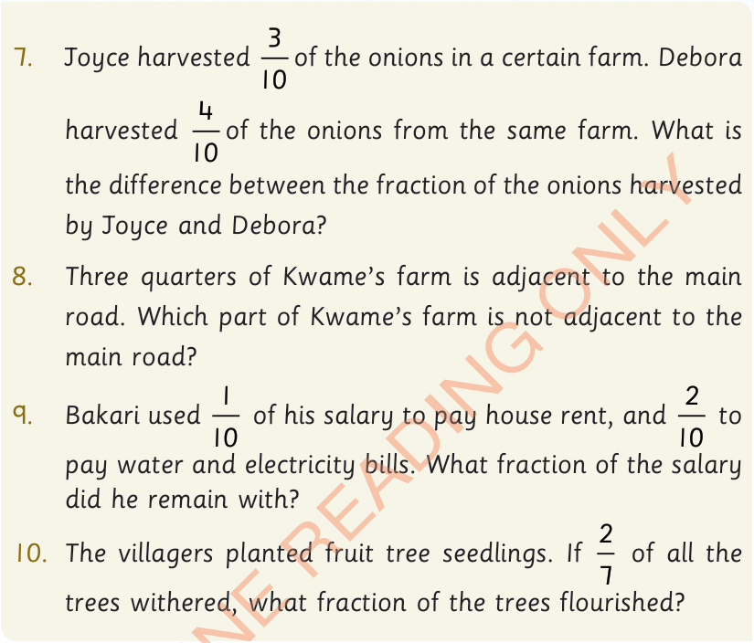

7.
Joyce harvested of the onions in a certain farm.
Debora harvested of the onions from the same farm.
What is the difference between the fraction of the onions harvested by Joyce and Debora?
8.
Three quarters of Kwame’s farm is adjacent to the main road.
Which part of Kwame’s farm is not adjacent to the main road?
9.
Bakari used of his salary to pay house rent, and to pay water and electricity bills.
What fraction of the salary did he remain with?
10.
The villagers planted fruit tree seedlings.
If of all the trees withered, what fraction of the trees flourished?